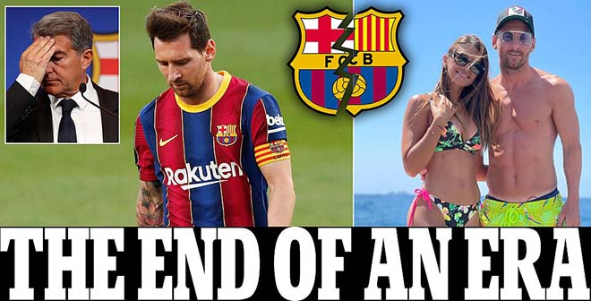

| MESSI CHIA TAY BARCA | CHUYỂN NHƯỢNG MÙA HÈ 2021 | PARIS SAINT-GERMAIN |
|---|
Lionel Messi phải rời Barcelona theo cách không mong muốn. Dĩ nhiên, việc không còn Messi trong đội hình
cũng là một cú đánh rất mạnh vào tham vọng của đội bóng xứ Catalunya trong mùa giải 2020/21. Nếu phải
đặt lên bàn cân so sánh, liệu phía nào sẽ mất nhiều hơn?
| BÓNG ĐÁ TÂY BAN NHA | BẤM LỊCH THI ĐẤU | BẤM BẢNG XẾP HẠNG |
|---|
Vụ việc Messi rời Barca sau gần 2 thập kỷ gắn bó khiến làng bóng đá thế giới chao đảo. Hãy cùng nhìn lại sự kiện
chấn động này, và cùng điểm lại những gì điều đáng chú ý nhất trong sự nghiệp của Messi khi còn khoác áo CLB
xứ Catalunya qua loạt bài của chúng tôi bắt đầu từ 8/8!
Điều đầu tiên cần nhắc đến, đó là khía cạnh tài chính. Về mặt này, cả Messi lẫn Barcelona đều thắng chứ không thua. Siêu sao người Argentina khi đến với đội bóng mới hứa hẹn sẽ nhận được mức lương 40 triệu euro/mùa, trong khi nếu ở lại, con số này chỉ là 20 triệu euro/mùa

Còn với Barcelona, dĩ nhiên rồi, đội bóng xứ Catalunya tiết kiệm được một khoản tiền khổng lồ để “nuôi” Messi như những năm qua. Mùa giải 2020/21, Barca dự kiến lỗ khoảng 470 triệu euro. Quỹ lương của đội bóng - như chính tiết lộ của Chủ tịch Joan Laporta trong buổi họp báo chia tay Messi, đang chiếm tới 110% doanh thu của đội.
Tuy nhiên, về góc độ chuyên môn, đây sẽ là vấn đề khiến cả hai phía đau đầu. Với Messi, anh sẽ mất đi môi trường vốn đã quá quen thuộc suốt 21 năm qua. Việc phải chơi bóng ở Pháp trong trường hợp gia nhập PSG - một giải đấu mà Kylian Mbappe và cả Neymar Junior đều muốn bỏ của chạy lấy người sẽ ảnh hưởng lớn đến anh trong các cuộc đua tranh danh hiệu quan trọng, trong đó nổi bật là Quả bóng vàng.
Hơn hết, Lionel Messi muốn kết thúc sự nghiệp trong màu áo Barcelona. Nhưng nguyện vọng ấy không thành, và giờ “Leo” sẽ phải học cách làm quen một đội bóng mới, ở một quốc gia mới. Cuộc sống của gia đình siêu sao 34 tuổi bị ảnh hưởng do phải thay đổi chỗ ở. Đây lại là điều Messi không mong muốn nhất.
Barcelona khi không Messi mới thực sự đáng lo ngại. Cả một tập thể lớn nhưng không ai dám chắc liệu Antoine Griezmann, Memphis Depay, Sergio Aguero hay cả Philippe Coutinho có thay thế nổi “El Pulga” hay không. Sức khỏe tài chính của Barca vốn đã yếu, nếu họ tiếp tục trải qua 1 hoặc vài mùa giải thất bát, mọi thứ sẽ trở thành thảm họa.
Việc không còn Messi trong đội hình cũng ảnh hưởng lớn đến sức hút của đội bóng xứ Catalunya. Một thực tế không thể phủ nhận trong những năm qua, đó là nhiều ngôi sao lớn mong muốn đến Barca là để được thi đấu cùng Messi. Đó là trường hợp của Aguero và Depay, hay trước đó là rất nhiều cầu thủ lớn khác nữa.
Nhưng để biết Lionel Messi và CLB Barcelona, phía nào mất nhiều hơn trong cuộc “hôn nhân” đổ vỡ này, có lẽ chỉ thời gian mới có câu trả lời. Nếu Messi đến PSG và giúp đội bóng thành Paris hiện thực hóa giấc mộng Champions League, anh sẽ được tôn lên hàng “thần thánh”. Còn nếu Messi không thể thích nghi với cuộc sống ở Paris và không chơi tốt như khi còn khoác áo Barca, anh sẽ bị đánh giá là kẻ chỉ có thể chơi tốt ở một đội bóng và kém xa kình địch Ronaldo ở khía cạnh này.
Về phần Barcelona cũng vậy. Họ cần cho thấy khả năng thích nghi với một cuộc sống không Messi. Chủ tịch Joan Laporta khẳng định, không ai lớn hơn CLB khổng lồ này, ngay cả là Messi đi chăng nữa. Nhưng từ lời nói đến thực tiễn còn là một khoảng cách xa vời. Vậy nên, chỉ thời gian mới cho tất cả câu trả lời thỏa đáng.
Hành trình vĩ đại của Messi ở Barcelona gắn liền với những danh hiệu, con số kỷ lục lưu danh sử sách, nhưng không phải không có những điểm đen, những scandal đáng tiếc. Mời đón đọc phần tiếp theo vào sáng 10/8!